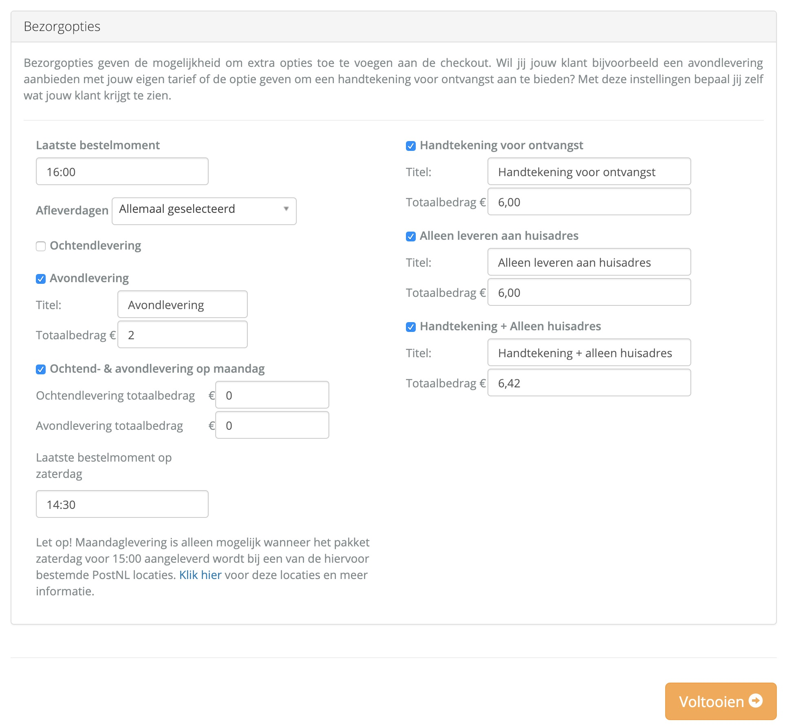
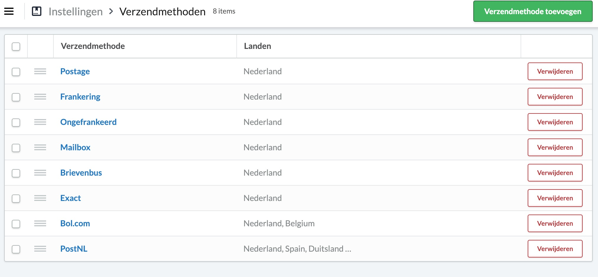
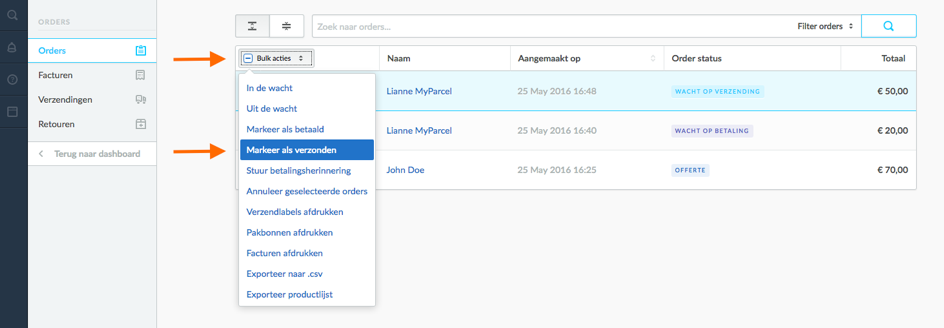

Instructie Lightspeed plug-in
In deze handleiding wordt uitgelegd hoe je de Lightspeed koppeling met MyParcel kunt installeren en hoe deze koppeling werkt.
In de App Store van Lightspeed kun je de MyParcel app vinden. Je kunt hier kiezen voor installeer app. De app wordt aangeboden door MyParcel, deze is kosteloos. Om gebruik te kunnen maken van de app dien je klant te zijn bij MyParcel. Wanneer je nog geen klant bent, kun je vrijblijvend registreren via de volgende link: www.myparcel.nl/registreren.
Inhoud
1 Instructie Lightspeed plug-in
1.1 De configuratie
Het is belangrijk dat je de MyParcel module eerst configureert. Nadat je gekozen hebt voor Installeer app kom je op de volgende configuratiepagina:

- Bij API-key kun je de API key invullen. Je kunt deze vinden bij MyParcel backoffice onder Instellingen → Algemeen in MyParcel.
-
Vervolgens dien je aan te geven hoe je de koppeling wilt gebruiken

Je kunt zelf bepalen wanneer je de orderdata naar MyParcel wilt versturen. Je hebt daarvoor een tweetal mogelijkheden:
-
Orders met status Niet verzonden (aanbevolen)
Wanneer je kiest voor doorsturen van Orders met status ‘Niet verzonden’ (aanbevolen), worden alle orders met status Niet verzonden direct naar MyParcel gestuurd. Omdat alle nieuwe orders binnen Lightspeed automatisch de status Niet verzonden hebben, worden al jouw orders in Myparcel gezet. Let op. Dit kan soms tot 15 minuten duren. Je hoeft dus niets te doen om jouw orders in MyParcel te importeren. -
Orders met status Verzonden
Wanneer je kiest voor doorsturen van Orders met status ‘Verzonden’, worden alle orders in MyParcel gezet zodra je de order in jouw Lightspeed backend handmatig op verzonden zet. Je kunt dit doen door de orders aan te vinken en rechtsboven voor Markeer als verzonden te kiezen. Nadat je dit hebt gedaan, zullen de orders binnen 15 minuten in MyParcel zichtbaar zijn. Het kan zijn dat orders dubbel in MyParcel komen te staan indien je orders, nadat ze de status Verzonden hebben, een andere status geeft en vervolgens opnieuw op Verzonden zet.
Nadat je dit hebt gedaan, zullen de orders binnen 15 minuten in MyParcel zichtbaar zijn. Het kan zijn dat orders dubbel in MyParcel komen te staan indien je orders, nadat ze de status Verzonden hebben, een andere status geeft en vervolgens opnieuw op Verzonden zet.
-
Orders met status Niet verzonden (aanbevolen)
-
Vervolgens kun je aangeven of je de zendingen in MyParcel direct wilt verwerken, of dat je dit handmatig in MyParcel doet.

-
Direct verwerken
Deze optie zorgt ervoor dat de, in MyParcel geïmporteerde, order ook direct wordt verwerkt. De zending wordt verwerkt met de gekozen standaard verzendwijze. Lastige van deze optie is, dat je naderhand geen aanvullende verzendopties meer kunt kiezen. -
Niet direct verwerken (aanbevolen)
Het spreekt voor zich dat bij deze optie de zendingen in MyParcel niet direct worden verwerkt. Wanneer je voor deze optie kiest, heeft je meer flexibiliteit. JE kunt in dit geval later nog verzendopties toevoegen of wijzigen.
-
Direct verwerken
-
Je kunt de zendingen standaard een verzendoptie meegeven.

-
Hier kan je verschillende bezorgopties aanzetten en e.v.t. titel en totaalbedrag aanpassen.

1.2 PostNL afhaallocaties activeren
-
Integratie inschakelen
 Ga in jouw Lightspeed backend naar Algemeen → Instellingen → Verzendmethoden. Hier kun je de PostNL verzendmethode configureren.
Ga in jouw Lightspeed backend naar Algemeen → Instellingen → Verzendmethoden. Hier kun je de PostNL verzendmethode configureren.
Bij de login information kun je de verzendmethode inschakelen. Overige velden zoals klantnummer, klantcode, locatiecode, gebruikersnaam en wachtwoord kunt je leeg laten. Zet de Mode op live.

-
Verzendmethoden instellen voor afhaallocaties
Kies hier voor de optie Ophalen op een postkantoor als je jouw klanten de gelegenheid wil geven het pakket te laten bezorgen op een postkantoor of servicepunt.
-
Verzendmethoden in de checkout
Nadat je de wijzigingen hebt doorgevoerd en opgeslagen zie je in het bestelproces van jouw webwinkel de volgende verzendmethoden:

1.3 Het aanmaken van de labels
-
Verzendmethodes Lightspeed
Om de zendingen op de juiste manier te kunnen exporteren naar MyParcel moet je in de titel van de verzendmethode de juiste benamingen gebruiken. Bijvoorbeeld PostNL moet voor alle pakketen en Brievenbus voor alle brievenbuspakjes:
 - Labels versturen naar de backoffice van MyParcel
Nadat de verzendmethoden de juiste titels hebben en de MyParcel module naar wens is geconfigureerd, kun je orders gaan verwerken. Je gaat hiervoor in de back-office naar
Orders.
Indien je hebt gekozen voor doorsturen van Orders met status Niet verzonden, hoef je in Lightspeed niets te doen. Wanneer je een nieuwe order binnen krijgt, wordt deze binnen 15 minuten automatisch in MyParcel gezet. Je kunt deze zendingen in MyParcel aanvinken en verwerken en/of printen.
Indien je hebt gekozen voor het doorsturen van Orders met status Verzonden, dan kun je in jouw Ligthspeed backend de orders aanvinken die je wilt gaan versturen via MyParcel.

Na het aanpassen van de status wordt de order binnen 15 minuten in MyParcel gezet. Je kunt deze zending(en) in MyParcel aanvinken en verwerken en/of printen.
Let op. Omdat wij niet teveel requests mogen doen bij Lightspeed, worden de aangemaakte verzendingen periodiek bij Lightspeed opgevraagd en in MyParcel geïmporteerd. Het kan dus even duren voordat jouw verzendingen in MyParcel zichtbaar zijn. Nadat je de verzendingen hebt verwerkt in MyParcel wordt na maximaal 2 uur ook de 3S code aan de order toegevoegd. Je hoeft dit dus niet meer handmatig te doen.
1.4 Track & Trace mail
Indien je er voor kiest om de Track & Trace mail vanuit Lightspeed te versturen, kun je deze functie in MyParcel onder Instellingen → Track & Trace uitzetten. Indien je er voor kiest om de Track & Trace mail vanuit MyParcel te versturen, kun je de email ‘Order track&trace code’ deactiveren. Dit doet je door de titel en de inhoud leeg te maken.
1.5 Multishop
Indien je meerdere webwinkels hebt onder één Ligthspeed account, dan moet je deze elk apart configureren. Selecteer de juiste store en herhaal de stappen om de app te configureren zoals eerder uitgelegd onder App store → koop app → installeer app. Herhaal deze stappen voor iedere store afzonderlijk
2 Indien je gebruik maakt van gratis verzending boven een bepaald bedrag
Om gebruik te maken van deze mogelijkheid, moet de PostNL module geactiveerd zijn. Vervolgens dien je deze module als volgt in te stellen:
- Ga naar Instellingen → Verzendmethoden → PostNL → Prijzen
- Kies bij Prijzen de juiste verzendmethode PostNL Standaard Verzending.
- Activeer Enable this pricing.
- Voer de orderwaarde in waarbij je gratis verzending aanbiedt.
- Zet de belasting op 21%.
- Controleer de prijzen nogmaals.
- Kies voor Opslaan.
3 Hulp nodig?
Indien je vragen hebt over de installatie of het gebruik van de plug-in, helpen wij je graag. Ook tips & suggesties voor verbetering van de (werking) van de plug-in, horen wij graag. Mail support@myparcel.nl of bel: 023 30 30 315.